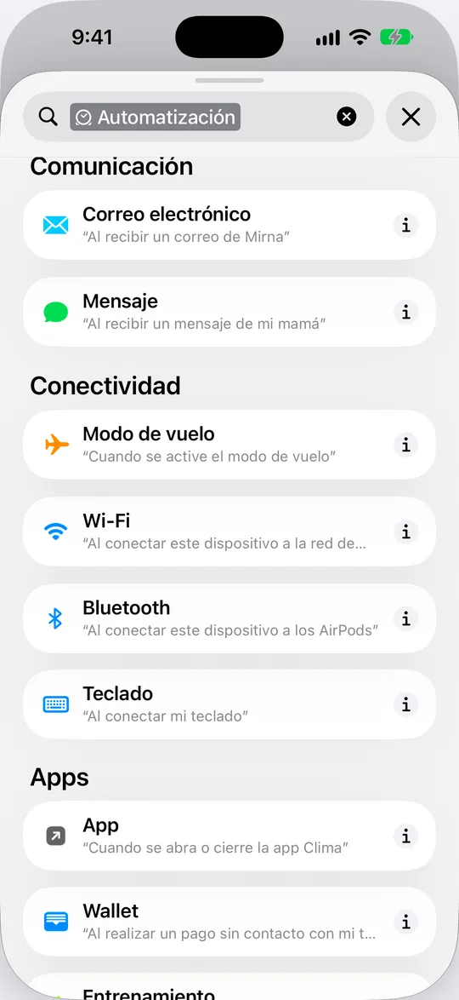
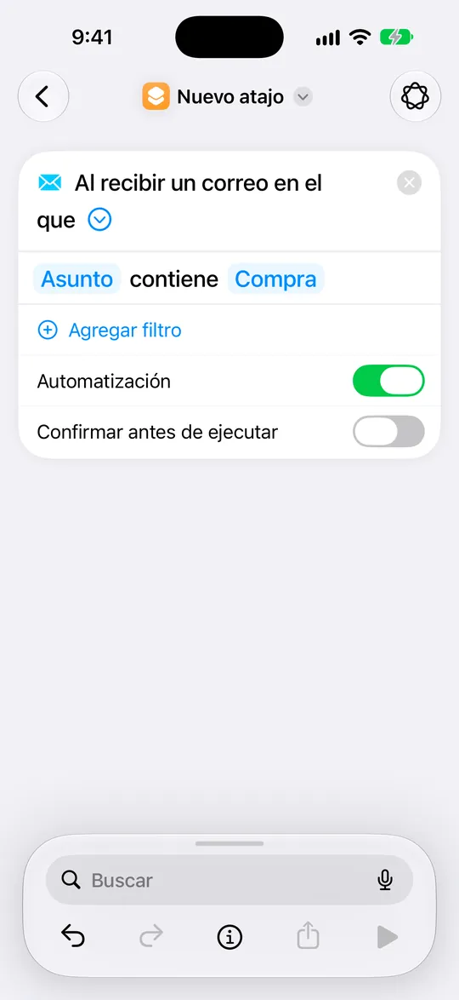
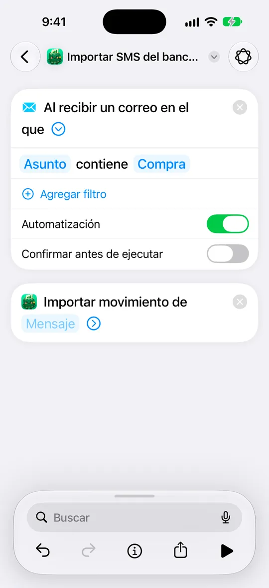
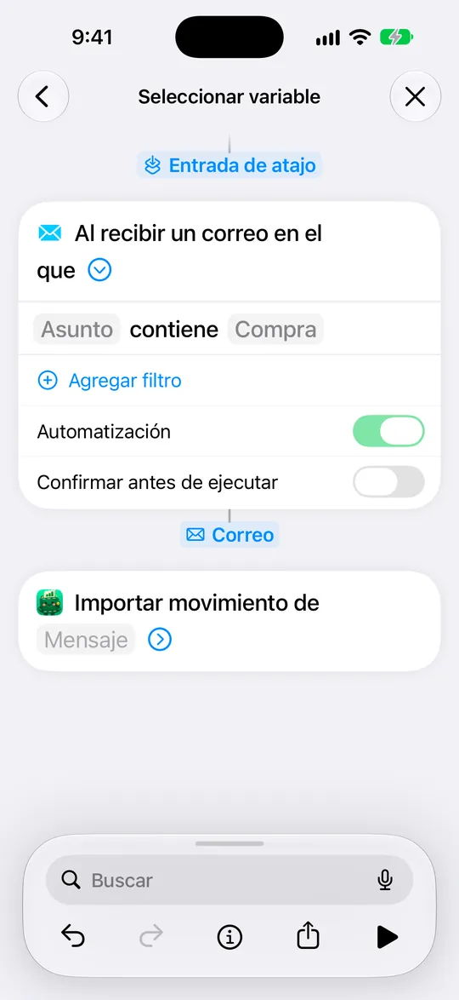
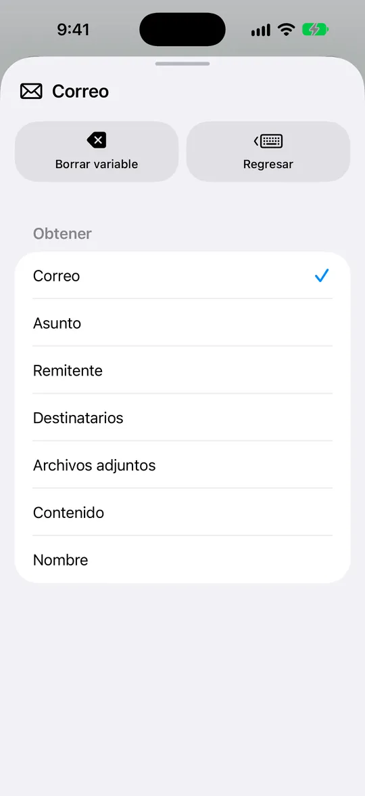
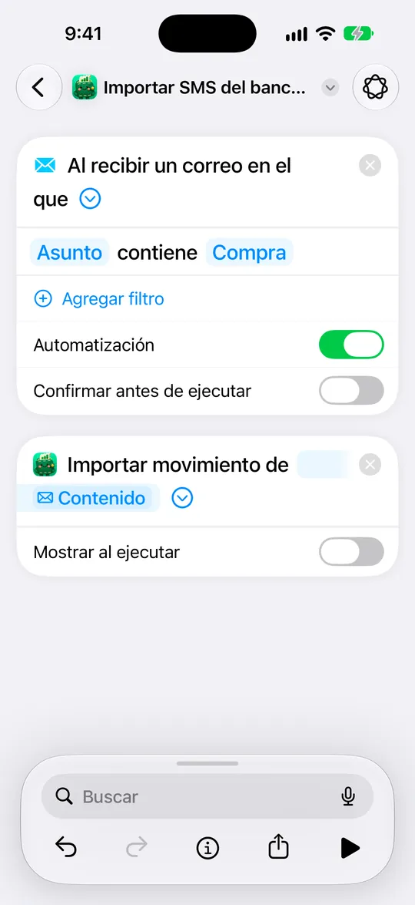

Registra los avisos de tu banco que llegan por correo
Si tu banco te manda un correo por cada compra o transferencia, una automatización en Atajos puede pasarle cada uno a TrackExpenses, igual que un SMS. El único paso extra: tu cuenta de correo tiene que estar en la app Mail de Apple, porque Atajos solo ve los correos que llegan ahí, no los de la app de Gmail ni los de Outlook.
Lo que necesitas
- Un iPhone con iOS 17 o posterior y la app Atajos de Apple.
- TrackExpenses en el mismo iPhone.
- Un banco que te mande un correo con el monto por cada movimiento. En Chile lo hacen casi todos; en Perú, el BCP e Interbank mandan su constancia por correo; en Argentina, Galicia avisa sus compras por correo.
Puedes seguir leyendo tu correo donde quieras: Mail solo necesita recibir una copia. Si te molestan dos notificaciones por correo, apaga las de Mail en “Configuración” → “Notificaciones” → “Mail”; la automatización se sigue ejecutando.
Agrega tu cuenta a Mail
En “Configuración” → “Apps” → “Mail” → “Cuentas de correo”, toca “Agregar cuenta” e inicia sesión (Google para Gmail, Outlook.com para Hotmail y Outlook). En iOS 17, el camino es “Configuración” → “Mail” → “Cuentas”.
Mail revisa Gmail cada cierto tiempo, no en el momento en que llega el correo. En la misma pantalla, configura “Obtener datos” cada 15 minutos, el intervalo más corto. Así, un movimiento puede aparecer unos minutos después del correo; si abres Mail, revisa al momento.
Elige la palabra del asunto
La automatización solo se ejecuta con los correos cuyo asunto contiene una palabra que tú eliges. Atajos no puede filtrar por el texto del correo, solo por remitente y asunto. Igual que con los SMS, no elijas un remitente: los bancos mandan sus avisos desde varias direcciones. Mira tres o cuatro avisos de tu banco y elige una palabra que esté en todos los asuntos y no en sus correos de promociones, como “compra”, “cargo”, “transferencia” o “constancia”. Sin ningún filtro, Atajos no deja crear la automatización.
Crea la automatización
Los pasos cambian según la versión de iOS. La app también te los muestra para tu versión, en “Más” → “Registro automático de SMS” → “¿Avisos del banco por correo?”.
iOS 27
Elige “Correo electrónico”
En Atajos, ve a “Biblioteca” → “Automatización” → +, toca “Automatización” y elige “Correo electrónico” en “Comunicación”.

Filtra por el asunto
Toca “Remitente”, cámbialo a “Asunto” y escribe tu palabra. Deja “Automatización” activada y “Confirmar antes de ejecutar” desactivado.

Agrega la acción para importar
Busca “Importar SMS del banco” y agrégala. Su campo “Mensaje” todavía está vacío.

Elige el correo
Toca “Mensaje”, luego “Seleccionar variable”, y toca “Correo” justo debajo del activador.

Usa el contenido del correo
Toca la variable “Correo” que acabas de insertar y elige “Contenido”.

Desactiva “Mostrar al ejecutar”
Abre la acción con su flecha, desactiva “Mostrar al ejecutar” y guarda.

iOS 26 y anteriores
- En Atajos, toca “Automatización”, luego + y elige “Correo electrónico”.
- Toca “El asunto contiene” y escribe tu palabra. Elige “Ejecutar de inmediato”, luego “Siguiente” y “Crear nuevo atajo” (en iOS 18 y anteriores, “Nueva automatización en blanco”).
- Agrega “Importar SMS del banco”. Toca su campo “Mensaje” → “Seleccionar variable” → “Entrada de atajo”.
- Desactiva “Mostrar al ejecutar” y guarda la automatización.
La acción se llama “Importar SMS del banco”, pero lee los correos igual. Si el campo “Mensaje” se queda vacío, la acción no tiene nada que leer: tiene que mostrar la variable.
Pruébalo antes
Copia el texto de un aviso de tu correo. En TrackExpenses, abre “Más” → “Registro automático de SMS” y pégalo en la tarjeta “Prueba con un SMS de tu banco”. Verás al momento qué haría la automatización con él: el monto, el comercio, la cuenta, o por qué lo saltaría. No se guarda nada.
Después del siguiente aviso real, la misma pantalla muestra en “Actividad reciente” qué se registró, qué se saltó y por qué. Si ahí no aparece nada, el problema está en el activador: la palabra del asunto, o Mail todavía no ha descargado el correo.
Bueno saberlo
- Si el correo no trae el monto, solo algo como “Tienes un nuevo movimiento, entra a tu banca en línea”, no hay nada que registrar.
- Un correo es un movimiento. Un resumen diario con varios movimientos no se divide, y los estados de cuenta en PDF no se leen.
- Muchos correos traen una tabla con varios montos, como “Monto” y “Comisión”: la etiqueta decide cuál es el pago.
- Los correos se leen con las mismas reglas que los SMS: los códigos, las compras rechazadas y las promociones no se registran, una compra en otra moneda espera tu tipo de cambio y los posibles duplicados quedan marcados.
- Si tu banco también te manda las mismas compras por SMS, usa un solo camino, o cada compra llegará dos veces.
- Las importaciones por correo cuentan en el mismo límite que las de SMS: 10 importaciones exitosas al mes gratis en cada dispositivo, ilimitadas con Pro.
Privacidad
Atajos solo le pasa los correos que coinciden con tu filtro, y solo su contenido. TrackExpenses lee el texto en tu iPhone y guarda el movimiento que encontró, nunca el correo. La app no inicia sesión en tu correo ni en tu banco.
Preguntas frecuentes
¿TrackExpenses puede leer la app de Gmail directamente?
No. El activador “Correo electrónico” de Atajos solo ve lo que llega a la app Mail de Apple. Por eso agregas tu cuenta de Gmail también a Mail.
¿Por qué el asunto y no el remitente?
Igual que con los SMS, importa cómo escribe el banco, no quién manda el correo. Los bancos mandan sus avisos desde varias direcciones, pero el asunto se mantiene.
¿Por qué un movimiento llegó tarde?
Mail revisa Gmail cada cierto tiempo. Configura “Obtener datos” cada 15 minutos o abre Mail.
¿Funciona con los correos de Nu o de Mercado Pago?
Todavía no hemos probado un correo real de aviso de Nu ni de Mercado Pago, así que no lo prometemos. Prueba uno en la tarjeta “Prueba con un SMS de tu banco” antes de crear la automatización; si no se lee, pega sus avisos.
Más información
Registra los avisos de tu banco: los tres caminos y la configuración de SMS con imágenes
TrackExpenses en español: todas las funciones
En inglés: Import bank email alerts on iPhone
Tu dinero, más fácil de seguir.
Control de Gastos por Voz, para iPhone, iPad y Mac.
5.0 de 5 en el App Store · 10 calificaciones en 7 países · Datos del 21/11/2026
Datos de la app: qué es gratis y qué agrega Pro
Control de Gastos por Voz (TrackExpenses) es una app de Mohamed Elatabany para iPhone y iPad con iOS/iPadOS 17 o posterior, y para Mac con chip de Apple. Está en español para Latinoamérica, inglés, árabe con el diseño completo de derecha a izquierda, alemán y portugués de Brasil. No necesita cuenta en la app ni acceso a tu banco. Puedes pegar el aviso de tu banco (un SMS, un correo o el detalle de un movimiento que la app de tu banco te deje copiar) y el monto, el comercio, la fecha y la tarjeta se llenan solos; automatizaciones opcionales de Atajos registran los avisos que llegan por SMS o por correo (con la app Mail, también los de Gmail) y las compras con Apple Pay. La app no lee tus mensajes ni tu correo. Una notificación no se puede copiar y ninguna automatización del iPhone puede leer las notificaciones de otra app, así que una compra que solo llega como notificación se registra por voz o a mano. Los códigos de verificación, las compras rechazadas y las preguntas como “¿Reconoces esta compra?” no se registran. El registro por voz funciona en el propio dispositivo, en los modelos e idiomas compatibles, y crea borradores: varias compras caben en una frase y en la pantalla de escucha eliges el idioma en que hablas. Al mantener presionado el ícono de la app aparecen “Dictar un gasto”, “Nuevo gasto”, “Pegar SMS del banco” y “Pregúntale a tu coach”. Gratis tienes movimientos manuales ilimitados, presupuestos, mover dinero entre presupuestos en el periodo actual y cubrir lo que te pasaste sin cambiar el total, días restantes y montos gastados y disponibles, alertas de presupuesto (al 80% si vas más rápido de lo planeado y cuando un presupuesto se excede), recordatorios de pagos a las 9:00 del día anterior, estadísticas, una búsqueda que suma lo gastado y lo recibido en todos los periodos, sincronización con tu iCloud privado en iPhone, iPad y Mac, 3 cuentas, 2 movimientos recurrentes, 10 registros por voz guardados y 10 importaciones automáticas exitosas de avisos del banco por mes calendario en cada dispositivo. El coach financiero lee tu último mes de presupuesto y sugiere un límite. Lo que responde con reglas (lo que gastaste hoy, una categoría, tus cuentas o cualquier mes), las gráficas, los archivos y los movimientos que escribes se resuelven en el dispositivo. Las preguntas abiertas van a Claude de Anthropic por un servidor del desarrollador solo si aceptas, con la conversación, un resumen de este mes y del anterior y, si el modelo lo pide, totales de hasta 13 meses o hasta 20 compras con fecha, comercio, categoría y monto; nunca notas, recibos, nombres o números de cuenta ni saldos (10 preguntas gratis al mes en cada dispositivo). Los avisos que pasan del límite gratis se guardan bloqueados fuera de tus totales: Pro los agrega todos; si no, el límite del mes siguiente libera los que alcance. No se pierde nada y tu historial nunca se bloquea, tampoco cuando termina Pro o la prueba gratis. Pro agrega registro por voz, importaciones, cuentas y movimientos recurrentes ilimitados, retos con el coach y más preguntas, el plan del salario, pronósticos, presupuesto diario general, por presupuesto o para las categorías que elijas hasta una fecha dentro del periodo, con los gastos fijos descontados primero, simulaciones, “Exportar y compartir” (toda exportación es Pro desde la versión 1.15.0: CSV de un mes, de un periodo o de todo, y el respaldo completo), importación CSV, respaldo JSON completo con restauración, temas e íconos alternativos. Hay suscripción mensual y anual y un pago único (Vitalicio). Los cálculos salen de tus movimientos y no son asesoría financiera.